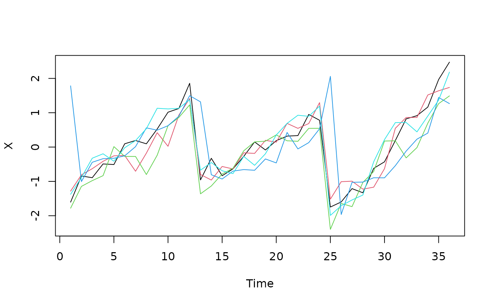

Simulate a pair of multivariate series with a known lag
Source:R/simulate.R
simulate_lagged_series.RdGenerates X as a multivariate seasonal series plus AR(1) noise. Under
the null (true_lag = NULL), Y is an independent draw from the same
generator. Otherwise Y at time t is a linear map of X at time
t - true_lag plus AR(1) noise; X is generated over n_times + true_lag
points so that every row of Y has a source in X.
Arguments
- n_times
Number of time points (at least 3).
- n_vars_x, n_vars_y
Number of variables in
XandY.- true_lag
NULLfor independent series, or a non-negative integer lag by whichXleadsY.0means a contemporaneous association, not the absence of one.- period
Length of the seasonal cycle, in time steps.
- amplitude
Amplitude of the seasonal signal (that of an equivalent sinusoid for the non-sinusoidal waveforms).
- waveform
Shape of the seasonal signal:
"circle"(default),"sine","harmonics","sawtooth"or"pulse". See Details.- spread
Phase offsets of the variables around the block phase, for every waveform except
"circle":"inphase"(default; normal with SD 0.3 rad, so the variables peak at about the same time),"anti"(as"inphase", with every second variable shifted by half a cycle) or"random"(uniform over the cycle).- amp_sd_vars, amp_sd_cycles
Standard deviations of the log-normal multipliers of the seasonal amplitude among variables and among cycles of length
period.0(default) keeps amplitudes equal.- autocorr
AR(1) coefficient of the noise, in
(-1, 1).- noise_sd
Marginal standard deviation of the AR(1) noise.
- seed
Optional integer seed. The global random number stream is left untouched.
Details
The seasonal component is set by waveform. The default, "circle",
gives every variable a sinusoid with a random phase common to the block
and offsets of \((j - 1)\pi/p\) among the \(p\) variables. These
columns span a single plane with evenly spaced offsets, so the seasonal
configuration is a circle and a shift in time is an exact rotation of it,
which Procrustes analysis absorbs. Calibration estimated with this
generator is therefore a best case. The other waveforms break
this symmetry. Each variable follows the same periodic function, shifted
by an offset drawn around the block phase as set by spread:
"sine": \(\sin\theta\);"harmonics": \(\sin\theta + 0.5\sin(2\theta + \psi_2) + 0.3\sin(3\theta + \psi_3)\), with \(\psi\) drawn once per block;"sawtooth": a linear rise over the cycle followed by an abrupt drop;"pulse": \(\exp(3\cos\theta)\), a short peak once per cycle.
These waveforms are centered and scaled to the standard deviation of a
sinusoid of the same amplitude (\(amplitude/\sqrt 2\) over a full
cycle), so that seasonal strength is comparable among them. When X and
Y share a non-sinusoidal waveform ("sawtooth" or "pulse"), phase
surrogates do not preserve the alignment of the harmonics within each
cycle, and the phase scheme of lagged_protest() can be strongly liberal
(see the article "Simulating lagged series").
Amplitudes can also vary among variables (amp_sd_vars) and among
successive cycles (amp_sd_cycles): each variable, or each cycle, has its
seasonal signal multiplied by \(\exp(N(0, \sigma^2))\). Both apply to
every waveform, including "circle".
Setting amplitude = 0 removes the seasonal component and leaves pure
AR(1) series; setting autocorr = 0 gives white noise around the
seasonal signal. The article "Simulating lagged series" shows how to use
the function for a calibration study.
Examples
null_pair <- simulate_lagged_series(n_times = 12, seed = 42)
lagged_pair <- simulate_lagged_series(n_times = 24, true_lag = 3, seed = 42)
str(lagged_pair)
#> List of 3
#> $ X : num [1:24, 1:5] 1.61 1.037 0.251 1.715 -0.572 ...
#> $ Y : num [1:24, 1:5] 2.309 0.727 0.574 1.5 2.748 ...
#> $ true_lag: num 3
# Abrupt seasonality that varies in amplitude between years
saw <- simulate_lagged_series(n_times = 36, waveform = "sawtooth",
amp_sd_cycles = 0.3, noise_sd = 0.3,
seed = 42)
matplot(saw$X, type = "l", lty = 1, xlab = "Time", ylab = "X")
